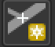

Georeference in QGIS
-
Download QGIS , if you haven’t already.
-
Add a basemap
Browser → XYZ Tiles → Open Street Map. -
Set the project coordinate reference system to WGS 84. At all times in the bottom right of the QGIS document, EPSG should read 4326.
Optional context on coordinate reference systems
Every dataset and every QGIS project each has a coordinate reference system (CRS). Coordinate reference systems allow the GIS software to know where on the world to place the dataset, how to line it up spatially. There are a number of different mathematical models that each define different ways of flattening a round globe onto a flat surface like a computer monitor, or a piece of paper (a map!) Cartographers or GIScientists will typically select one model, or CRS, over another, depending on the project. They make this selection based on the goals of the project, which features they want to highlight, deemphasize, or preserve. You can get started with coordinate reference systems in chapters 10-13 in the Open Geomatics Textbook.There are some cases where picking a specific CRS is necessary -- for instance if you want the map to look a certain way, or need your geographic features defined in meters or feet for calculating distance. Many times, however, picking a specific CRS is not imperative to the project, and in those cases, we recommend defaulting to Mercator. If you have worked with us before, you know we encourage questioning default settings, so to do your due diligence, you can read more about Mercator's pros and cons. For georeferencing, we've found it works well to start off in EPSG:4326, because it decreases the likelihood for errors down the road, especially if you want to someday bring your project to the web.
For this tutorial, an important fact to know about QGIS is the program will adopt as its project CRS the same CRS as the first dataset added to the project. Since we brought the OpenStreetMap basemap into our project as a reference layer, and since the OpenStreetMap basemap has a CRS of Web Mercator (EPSG code 3857), we must now change the project CRS back to regular Mercator (4326), to avoid those web problems down the road. To complete this, follow these steps:
Steps to change the project CRS
- In the bottom right-hand section of the screen where the project CRS is displayed as EPSG: 3857, click EPSG 3857 to open the Project Properties - CRS Wizard.
- In the search bar, type in 4326. Under Coordinate Reference System, WGS 84 4326 should now be an options you can select.
- Select or highlight WGS 84 EPSG:4326.
- Select Okay.
- In the bottom right-hand corner of QGIS, the project CRS should now read EPSG:4326.
- Open
Raster → Georeferencer.
Update: As of version 3.28, the georeferencer plugin is found under the `Layer` menu.
-
Open the image you wish to georeference in the georeferencer, by clicking the blue checkered
Open Rastericon in the menu banner. -
After you have added an image to the GDAL Georeferencer, click the
Add Pointbutton in the menu banner.  -
Choose a spot on the historical map for which you think you can find a corresponding modern location. Street intersections are a good place to start, if they still exist!
-
Choose to add the corresponding location
From Map Canvas. -
Find the location on the modern map.
-
Click
OKon the Enter Map Coordinates dialog box. In the GDAL Georeferencer, the map will not automatically snap to the correct location. Preview is not available until a few points have been added. -
Add two more control points, so that there are three total, attempting to spread the gcps on opposite corners of the map.
-
When there are three points, click the green
Start Georeferencingbutton.
-
The transformation settings will open. Select the following options:
Transformation type: Polynomial 1
Resampling method: Cubic
Target SRS: EPSG: 4326 - WGS 84
Output Raster: Save somewhere you will remember with a unique ID
Compression: LZW
Save GCP points: Checked
Load in QGIS when done: Checked
Everything else unchecked
-
Click the green
Start Georeferencingbutton again. A progress bar will appear. -
The new file will be added to the QGIS document. Look at it closely to make sure everything is lining up properly.
-
To make adjustments to the georeferencing, add more control points, or delete points that are incorrect, return to the GDAL Georeferencer window:
-
Make sure that the file exported has the correct name and saved properly to where you are organizing your data.
-
When the final image file has been georeferenced in a satisfactory manner and exported, navigate to the folder where it’s saved. Open the .txt file in a text editor to ensure that the points are saving correctly.
- The best way to check for image quality is to open the new geoTIFF in a photo editing software, preferably Photoshop .
- To start georeferencing another map, in the QGIS georeferencer, select
File → Reset Georeferencer. Repeat this process starting at step 5.